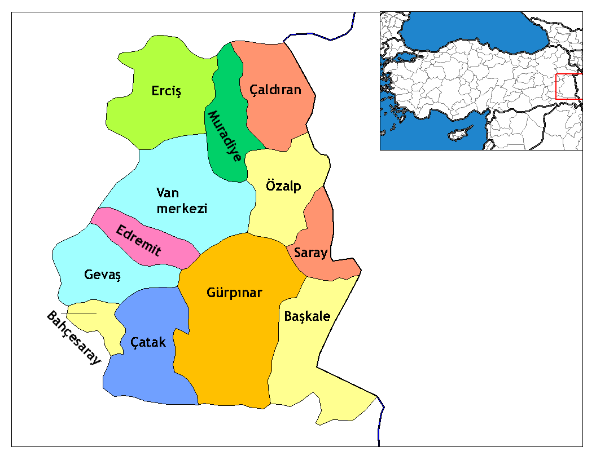

Van şehrinin 13 tane ilçesi ve belediyesi bulunuyor. Bu belediyelere bağlı olan 692 tane de mahallesi bulunuyor. İlçelerin isimlerini şu şekilde sıralamak mümkündür:
Van şehrinin merkez ilçeleri Edremit, İpekyolu, Tuşba ilçeleridir. Edremit ilçesi 1990 senesinde ilçe olmuştur. İpekyolu ise 11 Kasım 2012 yılında TBMM tarafından kabul edilen 6360 sayılı kanun ile Van merkezinin ikiye bölünmesi sonrasında merkez ilçe konumuna geçmiştir.
İpekyolu en kalabalık ilçedir. Aynı zamanda Van'ın ticaret merkezi olarak da bilinir. Tuşba ilçesi de yine aynı kanun ile merkez ilçe olan yerler arasındadır. Nüfus bakımından Van şehrinin 3. büyük ilçesidir.
